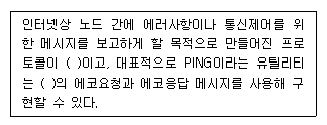
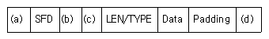
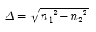
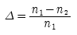
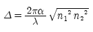
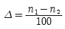

통신설비기능장 (2015-03-07 기출문제)
1과목: 임의 과목 구분(20문항)
1. ESS No.1A 전자교환기 프로세서의 주요 구성요소가 아닌 것은?
- 중앙제어부
- 프로그램 기억부
- 파일 기억부
- 자기테이프 장치
(정답률: 92%)

2. 전자교환기의 가 입자 정합기능의 종류를 약어로 정리하면 'BORSCHT'일 때, 기능에 대한 설명으로 틀린 것은?
- B : 통화 전류 공급
- O : 과전압 보호
- H : 2선/4선 상호 변환
- T : 전송
(정답률: 85%)
3. 다음 중 표본화 주파수가 높다는 것은 무엇을 의미하는가?
- 초당 샘플 수가 낮다.
- 전송하려는 정보의 양이 적다.
- 채널 용량이 커진다.
- 초당 프레임 수가 낮다.
(정답률: 91%)
4. PCM 통신 방식에서 신장이 이루어지는 단계는?
- 전송로 사이
- 양자화와 부호화 사이
- 표본화와 양자화 사이
- 복호화와 여파기 사이
(정답률: 77%)
5. 다음 중 반송 전화장치의 구성에서 고군과 저군을 분리ㆍ결합하는 장치는 무엇인가?
- 선로 여파기
- 방향 여파기
- 3권 변성기
- 평형 회로망
(정답률: 86%)
6. 다음 중 위상 등화기(보상기)가 반드시 필요하지 않는 경우는?
- 장하 케이블
- 동축 케이블을 이용한 영상 신호 전송
- 나선로를 사용한 반송 전화
- PCM 중계 회선 선로
(정답률: 69%)
7. 비동기 전송 방식에서 Start와 Stop 신호의 가장 적합한 필요성은?
- bit와 bit 사이를 구분하기 위하여
- bit 정보를 샘플링하기 위하여
- 각 문자를 구분하기 위하여
- 정보 단위의 통일성을 위하여
(정답률: 86%)
8. 무선통신 채널의 신호대잡음비(S/N)가 31이고 채널대역폭이 125[kHz]일 때, 최대 전송용량[kbps]은?
- 432
- 500
- 625
- 750
(정답률: 93%)
9. 디지털 변조방식에서 반송파의 진폭을 변화시키는 ASK의 특징이 아닌 것은?
- 동기, 비동기 ASK 검파가 가능하다.
- 비동기 검파시 정합 여파기를 사용한다.
- 대역폭은 기저대역 신호의 최대주파수의 2배가 된다.
- 진폭변조이므로 페이딩과 잡음의 영향에 약하여 오류 발생 확률이 크다.
(정답률: 63%)
10. 수신측에서 전송에러가 발생할 경우 송신측으로 손상된 데이터의 재전송을 요구하는 프로토콜은 무엇인가?
- ARQ
- 해밍 코드
- CRC
- 에러 정정 코드
(정답률: 89%)
11. 수신기의 초단 증폭기 이득이 10, 잡음지수가 2이고, 후단 증폭기의 이득이 20, 잡음지수가 4일 때 종합잡음 지수는?
- 0.7
- 1.2
- 2.3
- 4.1
(정답률: 72%)
12. 다음 중 전파에 대한 설명으로 적합하지 않은 것은?
- 전파는 횡파이며 평면파이다.
- 전파의 속도는 투자율이나 유전율이 클수록 속도가 빨라진다.
- 전파는 빛의 성질과 유사하다.
- 전파는 전계와 자계가 수직으로 존재한다.
(정답률: 77%)
13. 안테나의 고유주파수를 높게 하려고 한다. 다음 중 가장 적합한 방법은?
- 안테나와 직렬로 콘덴서를 접속한다.
- 안테나와 병렬로 콘덴서를 접속한다.
- 안테나와 직렬로 코일을 접속한다.
- 안테나와 병렬로 코일을 접속한다.
(정답률: 88%)
14. 파라볼라(Parabola) 안테나에 대한 설명으로 잘못된 것은?
- 지향성이 예민하고 이득이 높다.
- 이득은 안테나의 개구면적에 비례한다.
- 비교적 소형이고 구조가 간단하여 제작이 용이하다.
- 부엽(Side Lobe)이 비교적 적고 광대역성이다.
(정답률: 80%)
15. 다음 중 페이딩을 방지하기 위한 다이버시티가 아닌 것은?
- 공간 다이버시티
- 산란 다이버시티
- 주파수 다이버시티
- 편파 다이버시티
(정답률: 82%)
16. 다음 중 위성의 궤도조건과 배치방식에 따른 분류가 아닌 것은?
- 정지위성 방식
- 랜덤위성 방식
- 위상위성 방식
- 주파수위성 방식
(정답률: 79%)
17. 다음 중 위성체에서 사용되는 안테나와 거리가 먼 것은?
- 혼 안테나
- 파라볼라 안테나
- 위상배열 안테나
- 역L형 안테나
(정답률: 92%)
18. 다음 중 위성지구국 송신기의 체계도 순서가 올바르게 나열된 것은?
- 지상계 IF → 변조 → 다중화 → 고전력증폭기(HPA) → RF MUX → 안테나
- 지상계 IF → 다중화 → 변조→ 저잡음증폭기(LNA) → RF MUX → 안테나
- 지상계 IF → 변조 → 다중화 → 저잡음증폭기(LNA) → RF MUX → 안테나
- 지상계 IF → 다중화 → 변조→ 고전력증폭기(HPA) → RF MUX → 안테나
(정답률: 83%)
19. 위성지구국에 사용되는 비선형 증폭기에 입력되는 신호의 주파수가 3.5[GHz], 4.5[GHz]일 때 출력 가능한 신호의 주파수가 아닌 것은?
- 1[GHz]
- 7[GHz]
- 8[GHz]
- 10[GHz]
(정답률: 81%)
20. 다음 중 CDMA시스템에서 기지국으로 부터의 수신전력 세기에 따라 이동국 출력을 조정하여 근사적으로 기지국에 도달하는 이동국 출력을 최소화하는 전력제어 방식은?
- 개방루프 전력제어(Open Loop Power Control)
- 폐루프 전력제어(Close Loop Power Control)
- 내부루프 전력제어(Inner Loop Power Control)
- 외부루프 전력제어(Outer Loop Power Control)
(정답률: 87%)
2과목: 임의 과목 구분(20문항)
21. 다음 중 CDMA시스템에서의 파일롯 채널(Pilot Channel)에 대한 설명으로 틀린 것은?
- 항상 왈쉬 코드 “0”번에 할당된다.
- 어떠한 정보도 실리지 않은 상태에서 PN코드와 확산 변조된다.
- 이동국에서 시간 및 위상 기준을 제공하며, 기지국을 구분하는 정보를 제공한다.
- 기지국 초기 동기에 필요한 정보를 이동국에 내려준다.
(정답률: 59%)
22. 네트워크 종단 시스템(End to End) 간의 투명한 데이터 전송에 관련된 계층은?
- 응용 계층
- 네트워크 계층
- 트랜스포트 계층
- 물리 계층
(정답률: 78%)
23. 데이터교환망에서 데이터를 전송할 때 하나의 프레임의 시작과 끝을 정확하게 오류 없이 송수신측이 인식할 수 있도록 하는 기능은?
- 스트리밍(Streaming)
- 인터네트워킹(Internetworking)
- 패킷(Packet)
- 비트스터핑(Bit Stuffing)
(정답률: 75%)
24. LAN의 데이터 전송률이 100[Mbps], 한 패킷의 크기가 1,500[byte], MAC 프로토콜의 효율이 60[%]인 경우의 전송시간과 LAN의 처리율을 계산한 값으로 적당한 것은?
- 0.12[ms], 6[Mbps]
- 0.12[ms], 60[Mbps]
- 1.20[ms], 6[Mbps]
- 1.20[ms], 60[Mbps]
(정답률: 76%)
25. 다음 중 협대역 ISDN의 기본접속인터페이스(BRI) 구조에 대한 전송효율을 계산한 값으로 가장 적합한 것은?
- 약 44[%]
- 약 67[%]
- 약 75[%]
- 약 89[%]
(정답률: 70%)
26. 다음 중 광대역종합정보통신망(B-ISDN)의 설명으로 적합하지 않은 것은?
- 비동기전송모드를 사용하여 대용량 고속서비스를 지원한다.
- 셀 단위의 전송을 통해 고정 및 가변속도 서비스를 지원한다.
- 전송로의 다중화 방식은 동기식디지털계위(SDH)를 사용한다.
- 대화형, 검색형, 메시지형과 같은 분배성 서비스를 지원한다.
(정답률: 67%)
27. 다음 괄호 안에 공통으로 들어갈 프로토콜 이름은 무엇인가?

- ARP
- PARP
- IGMP
- ICMP
(정답률: 79%)
28. OSI 7 Layer 중 데이터링크 레이어에서 사용하는 데이터 단위를 무엇이라고 하는가?
- 패킷
- 프레임
- 비트
- 세그먼트
(정답률: 87%)
29. TCP Header Flag에 대한 설명으로 옳지 않은 것은?
- SYN은 연결시작을 나타내기 위해 사용하는 Flag 이다.는
- RST 리턴하도록 지시하는 Flag이다.
- FIN은 종료하도록 지시하는 Flag이다.
- PSH는 데이터 패킷을 최대한 빨리 보내도록 지시하는 Flag이다.
(정답률: 75%)
30. 인터넷상에서 사용되는 네트워크 클래스 B에서 한 네트워크 내의 최대 호스트 수는?
- 65,534
- 254
- 1,024
- 128
(정답률: 79%)
31. 이더넷 프레임(IEEE 802.3) 형식에서 항목이 순서대로 올바르게 짝지어진 것은?

- Preable - Destination Address - Source Address - FCS
- Preable - Source Address - Destination Address - FCS
- FCS - Destination Address - Source Address - Preable
- FCS - Source Address - Destination Address - Preable
(정답률: 71%)
32. 다음 중 커버로스(Kerberos) 시스템에 대한 설명으로 적합하지 않은 것은?
- 인증절차는 3단계 과정으로 이루어진다.
- 암호화는 DES 알고리즘을 사용한다.
- 티켓(Ticket)을 발급하는 별도의 서버가 사용된다.
- 폐쇄형 네트워크 시스템에 적합한 인증 시스템이다.
(정답률: 72%)
33. 통신선로 정수에 대한 설명 중 맞지 않는 것은?
- 1차 정수에서 저항, 인덕턴스, 정전용량 등이 있다.
- 2차 정수는 전파정수, 감쇠정수, 위상정수 등이 있다.
- 1차 정수에서 병렬적 요소는 정전용량, 누설 컨덕턴스이다.
- 1차 정수에서 R, L, G의 사용 단위는 같다.
(정답률: 90%)
34. 전송선로의 종단이 단락되었을 경우 전압 반사계수(m)는 얼마인가?
- -2
- -1
- 0
- 무한대
(정답률: 86%)
35. 비굴절률 차에 대한 설명으로 옳은 것은?
- 비굴절률 차가 클수록 광이 코어 내에 입사하기 쉽다.
- 비굴절률 차가 적을수록 광이 코어 내에 입사하기 쉽다.
- 비굴절률 차가 클수록 광이 클래드 내에 입사하기 쉽다.
- 비굴절률 차가 적을수록 광이 클래드 내에 입사하기 쉽다.
(정답률: 80%)
36. 다음 중 광섬유 케이블의 일반적인 특징을 설명한 것으로 옳지 않은 것은?
- 광대역 전송이 가능하다.
- 전송손실이 적어 중계기간의 설치 간격이 길다.
- 채널간 상호 전자기적인 누화의 영향을 받을 수 있다.
- 초다중화가 가능하다.
(정답률: 86%)
37. 광섬유 케이블의 전송 원리는 빛의 어떤 성질을 이용한 것인가?
- 흡수
- 투과
- 전반사
- 회절
(정답률: 92%)
38. 광케이블에서 비굴절률 차(Δ)를 나타내는 식은?(단, n1 : 코어 굴절률, n2 : 클래드 굴절률)




(정답률: 88%)
39. 광섬유 케이블 손실 중 내적인 손실에 속하지 않는 것은?
- 레일리 산란손실
- 구조불완전에 의한 손실
- 흡수손실
- 구부러짐(휨)에 의한 손실
(정답률: 81%)
40. 광학 파라미터(Parameter) 중 광케이블이 단일모드 파이버(Single Mode Fiber)와 다중모드 파이버(Multi Mode Fiber)를 구분하는데 사용하는 것은?
- 개구수
- 비굴절률차
- 수광각
- 규격화 주파수
(정답률: 67%)
3과목: 임의 과목 구분(20문항)
41. 참값이 100[V]인 전압을 측정하였더니 101.5[V]였다. 오차 백분율로 표시하면 몇 [%]인가?
- 0.15
- 1.5
- 15
- 150
(정답률: 89%)
42. 부하 임피던스와 전송선의 특성 임피던스의 비를 무엇이라고 하는가?
- 정규화 임피던스
- 정규화 저항
- 정규화 전류
- 정규화 전압
(정답률: 95%)
43. 다음 중 광섬유 케이블의 손실을 측정하는 방법은?
- 컷백(Cut Back) 방법
- RNF(Refracted Near Field) 방법
- 펄스 지연 방법
- 파필드(Far-field) 방법
(정답률: 85%)
44. 다음 중 광섬유 케이블의 측정방식인 후방산란방법에 대한 설명으로 틀린 것은?
- 광섬유의 균열 및 결함이 생긴 지점을 찾는데 사용하는 방법이다.
- 출력 단에서 광전력을 측정하며 계산하는 방법이다.
- 입력 단에서만 측정하므로 측정작업이 간단하다.
- 거리에 따른 손실계수의 측정이 가능한 방법이다.
(정답률: 78%)
45. 어느 전화가입자 선로에 통화전류가 전화국에서 60[mA]의 전류를 보냈던 바, 전화 가입자 댁에 도착된 전류는 60[μA]이었다. 이 가입자 선로의 통화 감쇠량은 얼마인가?
- -20[dB]
- -40[dB]
- -50[dB]
- -60[dB]
(정답률: 72%)
46. 신호 레벨이 -10[dBm], 잡음 레벨이 -49[dBm]일 때, 신호대 잡음비는?
- 10[dB]
- 49[dB]
- 39[dB]
- 59[dB]
(정답률: 88%)
47. 정류 회로의 직류 전압이 400[V]이고 리플 전압이 4[V]였다. 이 회로의 리플률은 몇 [%]인가?
- 1
- 2
- 3
- 5
(정답률: 80%)
48. 단상 전파 정류기의 DC출력 전력은 단상 반파 정류기 DC출력 전력의 몇 배인가?
- 같다.
- 2배
- 3배
- 4배
(정답률: 84%)
49. 다음 중 「정보통신공사업법」에 따라 용역업자에게 감리를 발주하여야 하는 공사에 해당하는 것은? (문제 오류로 실제 시험에서는 1, 2번이 정답처리 되었습니다. 여기서는 1번을 누르면 정답 처리 됩니다.)
- 「전기통신사업법」에 따른 전기통신사업자가 전기통신역무를 제공하기 위한 공사로서 총공사금액이 1억원 이상 2억원 미만인 공사
- 6층 미만으로서 연면적 5천 제곱미터의 건축물에 설치되는 정보통신설비의 설치공사
- 대ㆍ개체되는 기존 설비 외의 신설 부분이 정보통신공사업법 시행령 제4조 제1항에 따른 경미한 공사의 범위에 해당되는 공사
- 그 밖에 공중의 통신에 영향을 미치지 아니하는 정보통신설비의 설치공사로서 미래창조과학부장관이 정하여 고시하는 공사
(정답률: 85%)
50. 통신관련 시설의 접지저항을 100[Ω] 이하로 할 수 있는 경우가 아닌 것은?
- 선로설비 중 선조ㆍ케이블에 대하여 일정 간격으로 시설하는 접지
- 국선 수용 회선이 200회선 이상인 주배선반
- 보호기를 설치하지 않는 구내통신단자함
- 철탑이외 전주 등에 시설하는 이동통신용 중계기
(정답률: 87%)
51. 홈네트워크 설비 중 폐쇄회로텔레비전 장비의 설치에 대한 설명이 틀린 것은?
- 폐쇄회로텔레비전 장비의 카메라는 주차장, 주동출입구, 어린이놀이터, 엘리베이터 등에 설치할 것을 권장한다.
- 폐쇄회로텔레비전 장비를 설치하는 때에는, 설치되는 대상시설의 주요부분 등이 조망될 수 있게 설치하여야 한다.
- 폐쇄회로텔레비전의 영상은 보안용으로만 사용하고 거주자에게 제공하여서는 아니 된다.
- 렌즈를 포함한 폐쇄회로텔레비전 장비는 결로되거나 빗물이 스며들지 않도록 설치하여야 한다.
(정답률: 93%)
52. 정보통신공사업법에서 발주 받은 공사에 대한 감리결과를 발주자에게 서면으로 알려야 하는 자는?
- 설계업자
- 점검업자
- 용역업자
- 시공업자
(정답률: 83%)
53. 공사업자와 용역업자가 동일인임에도 불구하고 공사와 감리를 함께 한 자에게 처해지는 벌칙은?
- 3년 이하의 징역 또는 2천만원 이하의 벌금
- 3년 이하의 징역 또는 1천만원 이하의 벌금
- 2년 이하의 징역 또는 2천만원 이하의 벌금
- 2년 이하의 징역 또는 1천만원 이하의 벌금
(정답률: 90%)
54. 정보통신설비공사 중 용역업자에게 설계를 발주하지 않아도 되는 경미한 공사는?
- 고주파이용 통신설비의 설비공사
- 폐쇄회로 TV 설치공사
- 간이무선국, 아마추어국 및 실험국 무선설비설치공사
- 전력유도방지의 설비공사
(정답률: 84%)
55. 도수 분포표로 정리된 데이터를 막대그래프로 표시함으로써 수평이나 수직으로 상호 비교가 쉽도록 나타낸 것은?
- 체크시트(Check Sheet)
- 파레토도(Pareto Diagram)
- 특성요인도(Cause and Effects Diagram)
- 히스토그램(Histogram)
(정답률: 88%)
56. 샘플링 검사 목적에 의한 분류 중 랜덤샘플링 검사 방법에 해당되는 것은?
- 층별샘플링검사
- 2단계샘플링검사
- 취락샘플링검사
- 계통샘플링검사
(정답률: 68%)
57. 검사하는 시료의 면적이나 길이 등이 일정하지 않은 경우에 사용하는 관리도는?
- C관리도
- X관리도
- U관리도
- X-R관리도
(정답률: 78%)
58. 다음 중 작업시간연구의 범위에 포하되지 않는 것은?
- 간접측정
- 마이크로모션연구
- 표준자료법
- 실적자료법
(정답률: 83%)
59. 다음 중 기업정보시스템에 대한 설명으로 옳지 않은 것은?
- ERP(Enterprise Resource Planning)는 회계, 설계, 생산, 자재, 영업 등의 기능을 포괄하는 전사적기업정보시스템의 개념이다.
- KMS(Knowledge Management System)는 사물에 부착된 태그를 이용하는 비접촉 무선인식 기술로써 정보를 읽고 관리하는 개념이다.
- SCM(Supply Chain Management)은 원재료의 조달부터 제품의 생산 및 배송까지 공급체인을 전체적으로 관리하는 개념이다.
- CRM(Customer Relationship Management)은 고객의 확보, 고객의 유지, 고객 충실도 확보를 목적으로 하는 통합적 고객관리의 개념이다.
(정답률: 85%)
60. 중장기 기술 전력 수립을 위한 근거자료를 마련하고자 한다. 익명이 보장된 전문가 집단에 대하여 반복적인 설문조사를 실시하는 기법을 무엇이라고 하는가?
- 브레인스토밍
- 명목 그룹 기법
- 델파이 기법
- 친화도
(정답률: 87%)